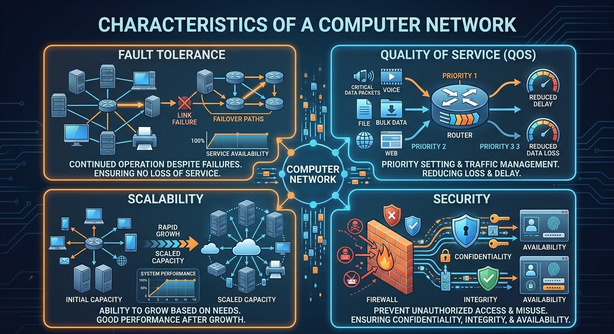

Introduction to Computer Network
today Networking is everywhere!
nowadays everyone is on internet and you may hear the word "Digital World"
every where. but do you ever wonder how internet or this digital world actually work?
now let dive into what computer network is.
computer network is a communication or relation between two or more computing devices.
or we can say computer network is a set of nodes connected by communication links.
A node can be Computer, printer or any other device which can send/receive data generated by other nodes in the Network.
in short nodes are computing devices.
Communication link is simply wired or wireless link that carries the information.
communication link is very important for the data sharing process between computing devices.
See Figure-01

Figure-01
Characteristics of Computer Network
if we say there is a computer network we should see some key points such as: Fault Tolerance, Quality of Service, Scalability, and Security.
1. Fault Tolerance is the ability of computer network to continue working despite failures
symply it is about Ensuring no loss of service while facing some failure
2. Scalability is the ability to grow based on the needs and having a good performance after growth
3. Quality of Service (QOS) is the ability to set priority and manage data traffic to reduce
data loss, delay....
if a Router receives two packets at a time the router should know which data it should process first
that is what setting priority is.
4. Security is the ability to prevent unauthorized access, misuse, and forgery and it is also the ability to provide Confidentiality, integrity, and Availability
See Figure-02

Figure-02